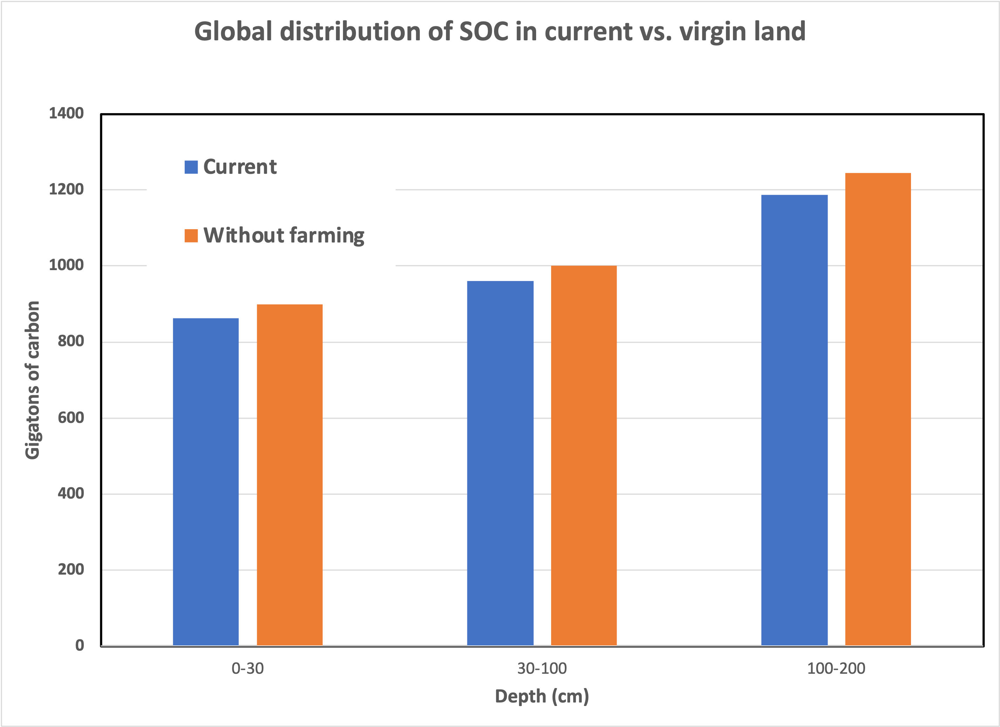
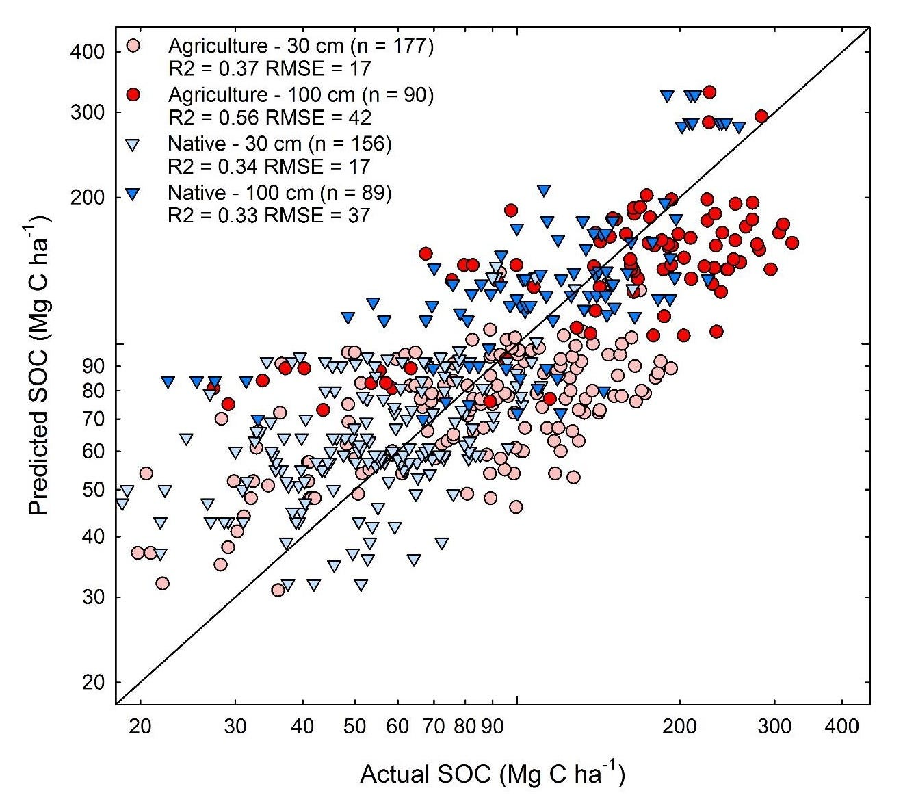
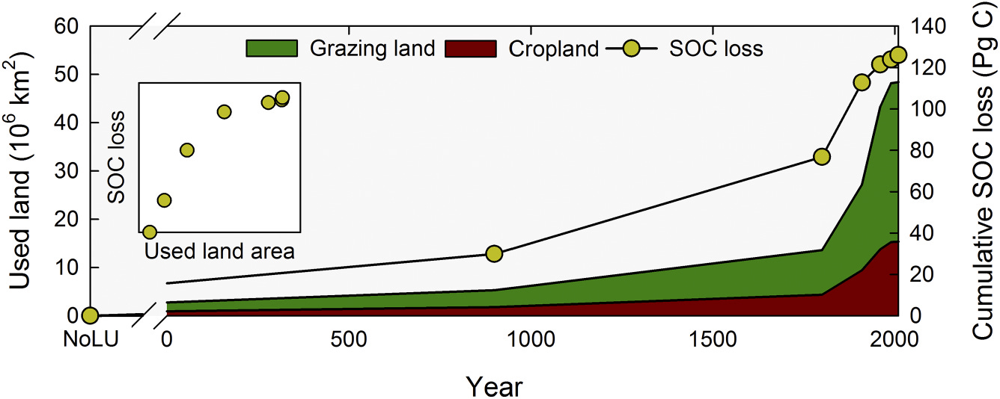

This past week, I had the privilege of attending an ARPA-E workshop on “Carbon Farming”. Workshops are an essential part of how the Agency identifies new opportunities and quantitative ways to measure their potential to form a program. In this instance, the workshop focused on using agriculture to improve the capture of atmospheric carbon dioxide or slow the release of other greenhouse gases like nitrous oxide.1 Invited presentations included prominent academic scientists, representatives from the agriculture industry, and forward-thinking farmers seeking ways to respond to global warming. I want to thank Dr. David Babson, the Program Director who organized the workshop, for allowing me to participate.
Among the scientific presentations, there were a few interesting discussions of soil chemistry, mainly “soil organic carbon” (SOC), a familiar component of “rich” soil. The scientific puzzle is that SOC is formed from decaying plant matter, is rich in nutritional value, yet is somehow stabilized so that microbes do not readily release it. It could be an ideal place to store the gigatons of carbon removed from the atmosphere, but how it persists in the soil is not well understood.
To put SOC in context, at least two presenters referenced a 2017 article in the Proceedings of the National Academies of Science (PNAS) entitled “Soil Carbon Debt of 12,000 Years of Human Land Use”2. First, let’s parse the title: What exactly is a “carbon debt”? Who owes the debt? And to whom? And why go back to 10,000 BC when even climate scientists set their baseline of 1750 AD? Second, in the published summary, the article calculated that an incredible 133 gigatons of carbon had been lost from soil reserves dating back to the dawn of civilization. That got me curious: “How the heck did they measure that?” and “Is that number real?” To answer all these questions, let’s examine the paper more closely.
In their analysis, the authors sourced a large dataset of SOC measurements compiled by The International Soil Resource & Information Center (ISRIC), a repository of all kinds of third-party soil measurements, including SOC, up to 2 meters (6 feet) in depth. They then obtained a second large dataset of human land use dating to 10,000 BC (HYDE 3.2) compiled by the Government of the Netherlands and reported here3. It makes intuitive sense that how humans use land resources will impact SOC, so there should be a correlation. [That answers one question: the study went back to 10,000 BC because that’s as far as the data allowed.]
The authors then developed a model (regular readers will know how I feel about models!) to describe the relationship between current land use and its SOC. As much as I loath models, fair enough, they might be the only way to hindcast soil conditions without clever chemical archaeology, like those used for ice core samples.4 The model listed five explicit factors named “climate”, “relief”, “lithology”, “land cover”, and “land use”. These factors are not specific numbers, so they must be aggregates of even more complex variables, such as temperature and precipitation, that scientists can measure. The authors assert that these parameters were “state of the art” for correlation when the article was published.
How good is this model at describing global SOC stocks? Well, there’s a problem right off the bat: SOC is measured at specific locations, depths, and times, while the land use is much lower resolution. In contrast, each pixel in HYDE is about 10 kilometers (6 miles) on a side. So, each soil sample represents 100 square kilometers of SOC. As a result, the model parameters are suitably dismal. The R-squared of the best model is 0.54 (perfect is 1.0), and a root-mean-square error is 12 kg C per cubic meter. To put this in simple terms, the factors (from HYDE) are about half of the elements needed to predict SOC (from ISRIC). More troubling, the standard error on the amount of C stored is about 0.25 gigatons of carbon, or about a gigaton of captured CO2, per pixel. Also, there are soils and carbon stores that go deeper into the ground than 2 meters, and that carbon isn’t accounted for because it isn’t measured.
With this “machine learning”5 model in hand, the authors “hindcasted” SOC levels to historical land-use patterns by starting in 10,000 BC with “no land use” and running the model to the present day. The differences in SOC are purported to represent the impact of humans on the soil. Here’s how the authors calculate that carbon is distributed (and would have been distributed without humans) according to the model:

This approach is problematic for even the most thoroughly parameterized models.6
To validate the model’s predictive power, the authors identified soil pairs of native (uncultivated) land in the same area as cultivated land. Then, they used the model to compare actual measurements to predicted. Here’s what they report":

It’s a clever approach, and again it makes intuitive sense. But the data shows that the model is, in a word, awful. A rule of thumb I was taught a long, long time ago is that log-log plots (like the above) nearly always appear linear, regardless of the data being compared. So you have to squint at the graph to convince yourself that there’s a difference between agricultural (circle) and native (triangle) lands at either depth (and the deepest stratum between 1 and 2 meters underground isn’t even reported). To my eye, it looks as if the model fails to predict measurements at either extreme. Nevertheless, there are some convincing points in the paper, so I encourage you to read it thoroughly to develop your opinion.
Let’s return to the questions. The “carbon debt” is what farmers owe to the planet in exchange for the SOC that’s been released due to all farming practices over several millennia. The “no land use” baseline projects that farming (and hence human societies) never existed. Over time, the “debt” looks like this:

What can we conclude about the 133 Pg (gigatons) carbon “debt” related to global warming/climate change? First of all, I’d assert that just because a computer model tells you something doesn’t mean it’s a fact—computers always provide an answer, and it’s up to users to decide whether it’s truthful. The models have such a high error that any quantitative conclusion is suspect.
Is it even remotely possible? Well, if farming released all 133 gigatons of carbon absent from the soil into the atmosphere, the carbon dioxide levels would increase by 60 ppm or about half of the amount recorded since 1750. Further, the model suggests that farming released more than half of the 133 gigatons before the Industrial Revolution (graph above). This conclusion is inconsistent with ice core sampling and isotope data7, direct physical measurements that measure CO2 levels and distinguish geologic and biogenic carbon emissions. So any SOC “debt” before 1750 must not have found its way into the atmosphere, and a significant portion of the “debt” after industrialization must have remained earthbound!
The suspected correlation between decreased SOC and increased atmospheric CO2 could be a false conclusion.
The IPCC Special Report on Climate Change and Land (SRCCL) assessed with high confidence that global vegetation photosynthetic activity has increased over the last 2–3 decades (Jia et al., 2019). That increase was attributed to direct land use and management changes, as well as to CO2 fertilization, nitrogen deposition, increased diffuse radiation and climate change (high confidence).
You read that right. Improved land use in agriculture since 1990 has contributed measurably to terrestrial absorption, with high confidence. That includes data from the years on which the model covered in this installment was based.
So, let’s answer the final questions. “How the heck did they measure that?”: They didn’t. They correlated two data sets as a profoundly flawed computer model and “Is that number real?”: No, it is off by such a significant factor that the authors might even have the direction of the effect wrong.
To me, this suggests that active, human management of agriculture, particularly improving processes that store carbon on otherwise unproductive lands, will achieve much more permanent terrestrial storage of excess carbon than intuition suggests.
Ahem. Irrigation.
Thank you for reading Healing the Earth with Technology. This post is public so feel free to share it.
Yes, this is the same nitrous that is known as “laughing gas”. During my undergraduate years, one of the fraternities lifted a tank of nitric oxide from the Chemistry department, apparently confusing the gases, and the administration broadcasted a frantic message across campus. Inhalation of nitric oxide would most likely have been fatal. Fortunately, campus security recovered the tank in an alleyway near Fraternity Row.
Klein Goldewijk, K., A. Beusen, J.Doelman and E. Stehfest (2017), Anthropogenic land use estimates for the Holocene; HYDE 3.2, Earth System Science Data, 9, 927-953.

For the uninitiated, “Machine Learning” is a hot buzzphrase in modeling. It implies an ability to extrapolate predictions outside a fixed training set of knowns, given enough data. It’s dangerous to assume that it’s somehow special compared to other computer modeling approaches unless validated independently.